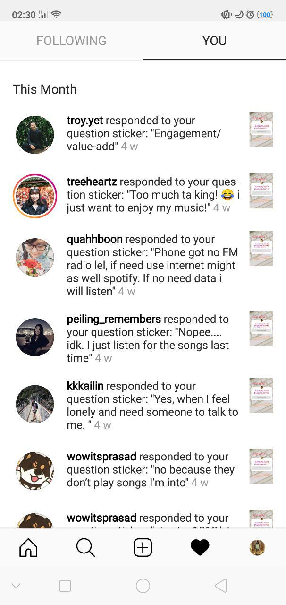

As a passionate radio-listener, the radio is a form of traditional media that I enjoy listening to. However, with modernisation and advancements in technology, many argue that the radio is facing its downfall with the number of listeners declining sharply. This saddens me which prompted me to embark on this project.
Firstly, I did a simple survey via Instastory to find out whether people still listened to the radio and their reasons for doing so or for not doing so. There were responses such as “Too much talking” and “No because they don’t play songs I’m into”. To me, these responses depict situations that are temporary and can be avoided. Naturally, the first solution that one can think of to the aforementioned problems is to switch channels. That was when I conceptualised this project which has a player that naturally helps users to switch to their preferred radio stations at different times of the day.
An example of my web radio player function can be seen in following short video. Intially, at 1.34am (seen at the top left corner), I was listening to Chinese radio station 933. While listening, I set the player to switch to 987 at 1.35am. When it was 1.35am, the player automatically changed to 987 seamlessly.